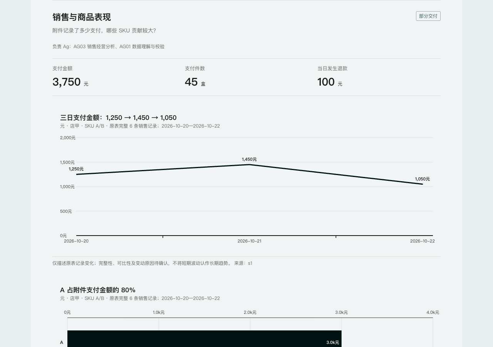

开源试用版 v1.2.0 · 面向电商业务人员
表格里的数字，
变成下一步行动。
把销售、库存和运营表格交给 AI，生成有图表、有简短建议、能回查依据的经营日报。
23 个角色方法 / 10 类日报 / 离线 HTML 成品
网页生成任务书；AI 分析在已安装 Skill 的 WorkBuddy 中执行。
先看交付结果，再决定是否安装
交互查看成品
第一次使用，只需三步
- 安装一个 Skill
在 WorkBuddy 的技能管理中上传安装 ZIP；23 个角色方法和 HTML 模板已集成。
- 上传表格，说清要看什么
上传 Excel / CSV / TSV。复杂需求可先用任务书生成器整理。
- 打开日报，核对后行动
查看图表、各模块建议和待确认项；重要决策仍需业务人员复核。
复制这句话开始
用电商日报助手分析这些表格，生成带图表和行动建议的日报。重点看销售、库存和补货；没有依据的内容标待确认。
经营总览店铺运营商品表现广告投放库存补货客服售后利润结算大促活动直播运营新品跟进
没有表格？下载演示表格与参考结果选需要的方法，不用逐个安排专家
AG01 先检查数据，业务角色按问题分析，AG05 组织图表和结论，AG23 回查计算。运行环境支持多智能体时可以分工；否则由同一助手分阶段执行，不将自检称作独立专家复核。
下载后，用自己的工作方式继续
先用演示表格确认链路，再尝试自己的资料。源码、角色提示词与模板均可修改。
公开试用版 · 安装排查与升级说明 · 更新需重新安装新版 Skill
开始前，你可能想知道
在线网页会直接调用 AI 吗？
不会。任务书生成器在浏览器中整理分析要求，演示日报是静态成品。实际读表、调用模型与生成新日报在 WorkBuddy 中完成。
表格是否需要上传到这个网站？
不需要。网站不提供表格上传与云端分析入口。业务表格交给你选择的 AI 平台，其传输、保留和使用规则由该平台决定；离线 HTML 不代表分析过程全部离线。
会自动补齐未知数据、预测采购量吗？
不会把未知当作零。缺少有效需求、交期、在途、MOQ 等必要条件时，会保留缺口并给出需要确认的项目。示例中的采购量也是待确认。
已测试到什么程度？
当前发布检查覆盖包结构、合成示例的确定性计算与浏览器呈现。可查看本版检查范围。WorkBuddy 不同版本、全部 23 个角色及真实业务表格仍需逐步验证。生成文件不等于所有业务判断都正确。
如何反馈或支持这个项目？
如果它帮你解决了实际问题，欢迎在 GitHub 点 Star。遇到问题可提交 Issue，附上客户端版本和合成示例；不要上传真实敏感经营资料。